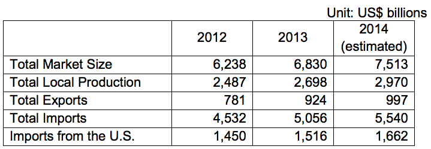

Total Market Size = US$ 6,830
Data Sources: ABIMED, ABIMO, ABIIS
Total Local Production: US$ 2,698
Total Exports: US$ 924
Total Imports: US$ 5,056
Imports from U.S.: US$1,516
Brazil is the largest medical equipment market in South America and should continue to expand. It is expected that this segment will regain double-digit annual growth in 2014, which was interrupted in 2012 due to the worldwide economic downturn and domestic strikes. Brazil is both a major medical equipment producer and importer. The industry is comprised of a number of related products and services, including:
Brazilian medical equipment revenues in 2013 reached an estimated US$6.8 billion, which represents an increase of 9.4 % from the previous year. U.S. products account for approximately 30% of the import market, mainly sold through local agents, distributors and importers to hospitals and clinics. The market for electro medicine equipment is around US$200 million, which represents approximately 50% of total sales in Latin America. In 2013, imports for in vitro diagnostics reagents and devices increased approximately 10%, reaching sales of US$230 million.
There are few, high-quality Brazilian manufacturers producing advanced medical equipment, forcing Brazil to rely on imports, a trend that will continue for quite some time. Local buyers view U.S. and other foreign products (mainly Canadian and European) as having high quality and reliability. Thus, financing terms often become the differentiating criteria in making a sale.
Anvisa, Brazil’s Health Surveillance Agency is the country’s national agency of sanitary surveillance that regulates registration of medical related products. Risk class III, IV and some II may demand international inspections for Good Manufacturing Products (GMP). Electrical and battery powered devices must receive certifications and the Brazilian Conformity Mark from Inmetro, the National Institute of Metrology, Quality and Technology that issues.